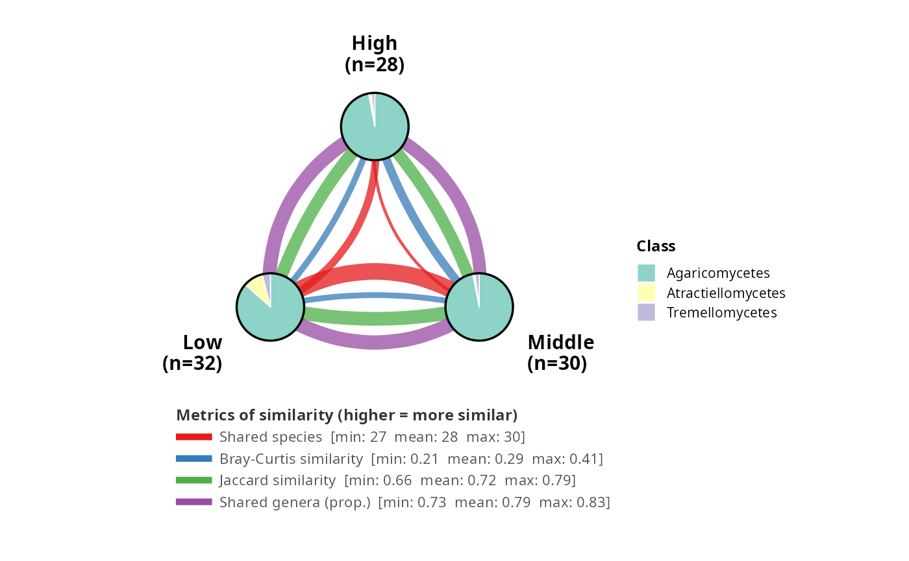

Community sharing plot: modalities as pie nodes with multi-metric links
Source:R/community_sharing_plot.R
community_sharing_plot.Rd
Draws a figure with one node per modality of fact (2 to 4 supported),
positioned on a regular polygon. Each node is a pie chart showing the
taxonomic composition at rank pie_taxrank. Between each pair of nodes, one
curved link per metric is drawn; linewidth is rescaled within each metric to
linewidth_range. A legend below the figure gives each metric's min / mean /
max over all pairs.
community_sharing_plot(
physeq,
fact,
metrics = default_sharing_metrics(),
pie_taxrank = "Class",
pie_r = 0.28,
label_offset = 0.18,
curvature_range = c(-0.35, 0.35),
linewidth_range = c(0.8, 4.5),
n_perm = 0,
sig_threshold = 0.05,
nonsig_alpha = 0.15,
seed = NULL,
palette = "Set3",
max_taxa = 12,
other_color = "grey70",
show_na_modality = FALSE,
show_na = TRUE,
na_color = "grey40",
pie_border_color = "black",
pie_border_width = 0.6,
title = NULL,
base_size = 12
)Arguments
- physeq
(required) A phyloseq::phyloseq object.
- fact
(required, character) Name of a
sample_data(physeq)column used to group samples into modalities. Must have 2 to 4 unique values.- metrics
(named list, default
default_sharing_metrics()) Metric definitions. Seedefault_sharing_metrics()andmake_sharing_metric().- pie_taxrank
(character, default
"Class") Taxonomic rank for the pie charts.- pie_r
(numeric, default
0.28) Pie radius in data units.- label_offset
(numeric, default
0.18) Distance between pie edge and node label.- curvature_range
(numeric of length 2, default
c(-0.35, 0.35)) Range ofggplot2::geom_curve()curvatures used to fan out metrics between a pair of nodes. The sign is flipped per pair so that the first metric always fans toward the plot centre (and the last toward the border).- linewidth_range
(numeric of length 2, default
c(0.8, 4.5))linewidth_range[1]corresponds to the weakest similarity,linewidth_range[2]to the strongest. For bounded metrics (bounds = c(0, 1)), the mapping is global across runs; for unbounded metrics it is scaled within the observed range.- n_perm
(integer, default
0) Number of label-permutation iterations for significance testing.0disables the test. See Details.- sig_threshold
(numeric in
(0, 1), default0.05) p-value threshold below which a link is considered significant. Only used whenn_perm > 0.- nonsig_alpha
(numeric in
[0, 1], default0.15) Alpha applied to non-significant links. Significant links keep alpha0.75. Only used whenn_perm > 0.- seed
(integer or
NULL, defaultNULL) Passed toset.seed()before the permutation loop for reproducibility.- palette
(character, default
"Set3") Either the name of an RColorBrewer qualitative palette or a character vector of fill colours for the top taxa.- max_taxa
(integer, default
12) Keep colours for themax_taxamost abundant taxa (summed across modalities) and collapse the rest into an"Other"category filled withother_color.- other_color
(character, default
"grey70") Fill colour for"Other".- show_na_modality
(logical, default
FALSE) IfTRUE, samples whosefactvalue isNAare grouped into an extra"NA"modality. The total number of modalities (including"NA") must still be between 2 and 4.- show_na
(logical, default
TRUE) IfTRUE, taxa with anNA/empty value atpie_taxrankare shown as a dedicated"NA"category filled withna_color. IfFALSE, they are dropped.- na_color
(character, default
"grey40") Fill colour for the"NA"taxonomic category.- pie_border_color
(character, default
"black") Colour of the circle drawn around each pie.- pie_border_width
(numeric, default
0.6) Linewidth of the pie border.- title
(character, default
NULL) Plot title.- base_size
(numeric, default
12) Base font size.
Value
A ggplot2::ggplot object.
Details
Permutation null model. When n_perm > 0, significance is assessed by
label permutation: the fact column in sample_data(physeq) is shuffled
uniformly at random among samples (preserving group sizes), then all prep()
functions and metric computations are re-run on the permuted data. This is
repeated n_perm times. The empirical p-value for each pair x metric
combination is the proportion of permuted values greater than or equal to the
observed value (one-sided upper-tail test). Non-significant links are drawn
with alpha nonsig_alpha (faded); significant links use alpha 0.75.
Performance. Each permutation re-runs all prep() functions. For metrics
that call phyloseq::tax_glom() (e.g. genus_prop), this can be slow on
large datasets. Recommended range: n_perm = 99 to n_perm = 199.
Examples
# \donttest{
data(data_fungi_mini, package = "MiscMetabar")
pkgs <- c("ggforce", "purrr", "tidyr", "scales", "RColorBrewer", "vegan")
if (all(vapply(pkgs, requireNamespace, logical(1), quietly = TRUE))) {
# Default: 4 metrics, pie charts at Class rank, Height has 3 modalities
community_sharing_plot(data_fungi_mini, fact = "Height")
}

# }
if (FALSE) { # \dontrun{
# Only show a single metric (Jaccard)
community_sharing_plot(
data_fungi_mini,
fact = "Height",
metrics = default_sharing_metrics()["jac_sim"]
)
# Use Phylum rank for the pie charts and a different palette
community_sharing_plot(
data_fungi_mini,
fact = "Height",
pie_taxrank = "Phylum",
palette = "Set2",
max_taxa = 8
)
# Include samples with NA height as a fourth modality
community_sharing_plot(data_fungi_mini, fact = "Height", show_na_modality = TRUE)
# Permutation significance test (99 permutations, faded non-sig links)
community_sharing_plot(data_fungi_mini, fact = "Height", n_perm = 99, seed = 42)
} # }